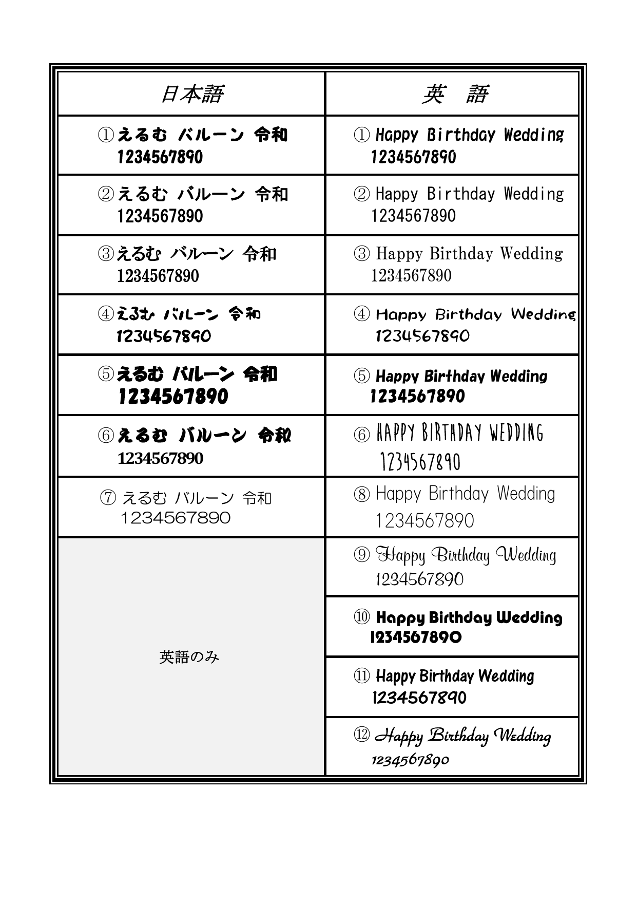

BALLOON LETTERING
文字の見本を、
ゆっくり選ぼう。
お好きなフォント番号と入れたい文字を、LINEでそのまま伝えられます。
プレビュー（雰囲気の確認用）
Happy Birthday
英語 ① を選択中
※ 実際の仕上がりは、下の公式見本と文字内容をもとに確認して確定します。公式フォント見本
日本語 ①〜⑦／英語・数字 ①〜⑫ の番号は、これまでのご注文方法をそのまま引き継いでいます。

LINEでの伝え方
コピーした文章を、LINEのトークに貼り付けるだけで大丈夫です。色・バルーンの種類・文字数によって入れられる大きさは変わるため、最終確認はスタッフが行います。
ご相談メモへ戻る